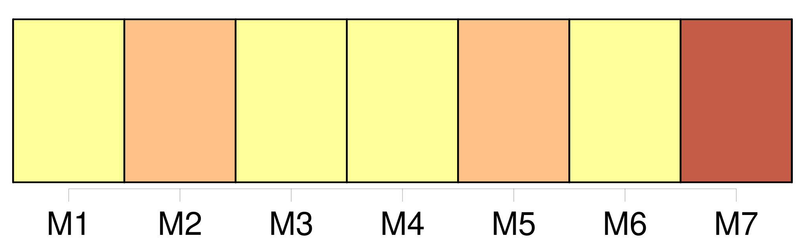
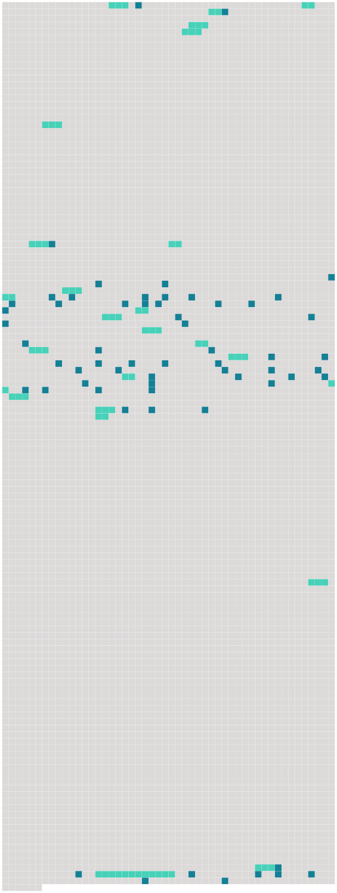

Longueur nb maillons : 85 mentions |
  |
À cause de la fenaison, Manine n'a guère le temps de s'occuper de [la petite Reine] , [qu'] elle a mise au monde le lendemain même de mon arrivée.
Levée avec le jour, elle change en hâte les langes de [l'enfant] , approche le berceau de mon lit, et s'en va en courant aider tante Rude au moulin, pour revenir plus vite encore aux heures de la tétée. Malgré la gentillesse [du bébé] [qui] commence à me sourire et me connaître, malgré la gaieté bruyante de Clémence, je m'ennuie de l'absence de Manine. [1 phrases]
Je le regrette vite, car dans ma hanche, le chien hargneux [1 phrases] Clémence qui est déjà coquette se moque de ces vêtements disparates et méprise [sa petite sœur] comme une poupée mal habillée. [21 phrases]
Tout cela coupé de silences qui nous permettent de nous réjouir du babillage de Clémence et du petit Jean, du gazouillis infiniment léger de [la petite Reine] , du chant des oiseaux dans les branches du noyer, et enfin, des bruits de toutes sortes que font dans la campagne les hommes et les bêtes. [44 phrases]
Je repousse même [la petite Reine] [que] Manine se plaît à mettre dans mes bras en disant : [15 phrases] [Reine] n'ayant pas six mois encore ne pouvait pas être sevrée. Il faudrait [lui] donner le biberon tandis que le petit étranger prendrait [sa] place.
Et Manine qui doit rester deux jours absente vient de partir, tremblante et affreusement tourmentée, quoique tante Rude lui eût assuré qu'elle saurait bien faire accepter le biberon à [la petite Reine] [1 phrases] Je ne voulus pas attendre le réveil complet de [la mignonne] pour approcher le biberon de [sa] bouche. [Elle] le prit sans méfiance, mais à peine l'eût [-elle] pressé qu' [elle] le repoussa et [renvoya] en pluie toute la gorgée de lait.
Il y eut dans [ses] yeux subitement ouverts un étonnement indigné, et aussitôt [elle] se mit à crier comme jamais [elle] ne l'avait fait encore. Tout le jour [elle] cria et [repoussa] de [ses] petites mains l'horrible chose qu'on voulait [l'] obliger à mettre dans [sa] bouche.
Lasse et ennuyée, j'essayai de divers moyens pour [la] faire boire, mais tous furent inutiles. Le soir venu, tante Rude, qui ne pouvait gronder [l'enfant] s'en prit à moi, et m'accusa de maladresse. [1 phrases] [La petite Reine] ne voulait pas s'endormir, rien ne [la] calmait ; ni le mouvement régulier du berceau, ni les airs lents que j'imitais de Manine. [Elle] avait faim. [Ses] cris se faisaient plus aigus à mesure que la soirée s'avançait, et peu à peu cela devint une véritable crise nerveuse qui tordit tout [son] petit corps. [1 phrases] Mais Clémence accroupie sur le pied de mon lit refusa en pleurant, car si elle était effrayée par les cris de [sa petite sœur] , elle l'était bien davantage à l'idée de traverser le jardin dans l'obscurité. [2 phrases]
Et tout à coup Clémence me dit : Je savais que cela ne m'était pas possible, cependant je pensais que le simulacre pourrait calmer [l'enfant]
Et, tout en regrettant de ne pas posséder la belle noisette brune qui terminait le sein de Manine, j'approchai [la petite Reine] ma poitrine maigre et sans forme. [Elle] se calma instantanément ; mais, avec une adresse que je n'avais pas prévue, [elle] saisit une mince partie de chair et l'aspira avec frénésie. [1 phrases] Pour échapper à ce supplice, j'essayai de repousser [la petite Reine]
Mais si [elle] cessa tout de suite la succion, [elle] garda entre la langue et le palais ce qu' [elle] venait de prendre et le [retint] aussi fermement que si [elle] eût des dents.
[Elle] resta ainsi à me regarder, et [ses] yeux grandement ouverts m'adressaient de tels reproches pour la supercherie que je me crus obligée de me défendre comme devant une grande personne : pourquoi ne veux [-tu] pas du biberon??
Et, tout en pleurs, autant de la pitié qu' [elle] m'inspirait que du mal qu' [elle] continuait à me faire, je [lui] présentai le lait qui avait gardé toute sa tiédeur à l'abri de mon oreiller : [Elle] eut une sorte de sanglot qui retroussa [son] petit nez, puis [elle] ouvrit la bouche, et, lentement, avec un dégoût visible, [elle] suça la grosse tétine de caoutchouc.
Et lorsqu' [elle] eut vidé le biberon jusqu'à la dernière goutte, toute anxiété et souffrance oubliées, je [l'] embrassai longuement au front :
[Elle] soupira comme pour me faire savoir qu' [elle] avait quand même du chagrin, et [elle] s'endormit avant que j'eusse pris le temps de balancer le berceau. [1 phrases]
Rassurée sur [sa petite sœur] elle sauta de mon lit à terre en demandant : [6 phrases] Manine à son retour trouva [la petite Reine] tétant [son] biberon comme si [elle] n'avait jamais connu le sein de [sa] mère. [1 phrases]
Elle mit sur mon front un baiser tout pareil à celui que j'avais donné à [sa fille] la nuit d'avant, et la voix tout émue, elle me dit : [53 phrases]
Je me défendis : [93 phrases] J'avais encore [la petite Reine] [que] j'aimais presque à l'égal des jumeaux depuis la nuit où nous avions souffert et pleuré ensemble. [C'] était maintenant [une petite fille aux cheveux fins et aux yeux plein d'intelligence] Je [la] prenais sur mes genoux, et je chantais pour [l'] amuser.
[Elle] m'écoutait sans que [son] regard se détachât du mien, remuant les doigts devant ma bouche comme pour saisir les mots ou les sons ; ou encore, [elle] mettait à hauteur de mon visage l'envers d'un de [ses] pieds, me montrant un talon soyeux et des orteils frais et roses et tout semblables à de petits fruits mûrissants. |
 |
La ressource peut être téléchargée sur la page Ortolang
Si vous avez des questions ou vous voyez des erreurs, merci d'envoyer un mail à silvia.federzoni89@gmail.com
Site développé par S. Federzoni (contact)